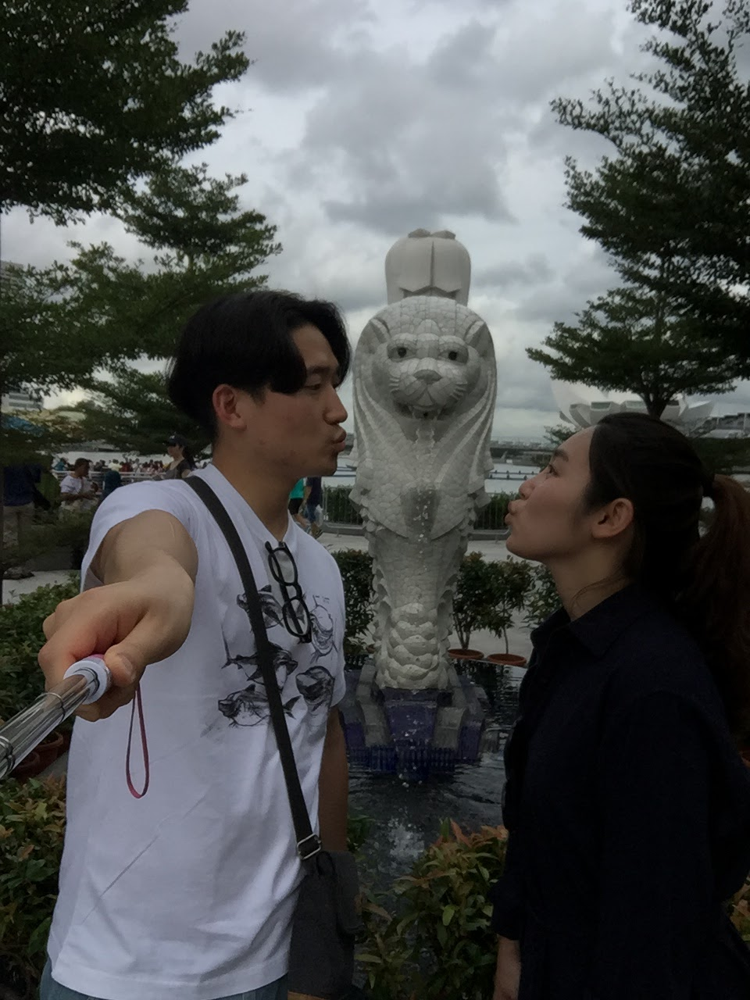

♡김이슬♡
이슬아. 부족한 실력이지만 자기만을 위한 유일한 그리고 내가 만든 첫 번째 웹 페이지를 만들어 봤다.
사실 무엇을 위해 난 이렇게 코딩을 공부하나 생각해보니까... 내가 초딩 때 학교 대표로 코딩 대회 준비를
했었던 기억이 나네. 그때 나 뭐랄까 이렇게 기계어로 뭔가를 구현해낸다는 사실이 참 신기했었거든.
지금이라도 이렇게 작은 규칙들 코드들 써가면서 간단하게 만들어가는 이 느낌에 초6, 13살 때의 느낌이 떠오르고
감회가 새롭네. 이제 겨우 한 걸음 내딛었지만 꾸준히 해보려고 해. 여튼, 자기한테 글을 쓰려다 일기를 쓰네
우리의 2018년이 이제 기지개를 켜고 이렇게나 달려왔구나. 우리 늘 그랬듯이 올해도 예쁘게 사랑하자.
정말 자기 너를 만나서. 내 인생이 얼마나 행복해졌나 모르겠다. 많이 자기한테 고맙고, 또 세상에 감사한다.
이제 일주일 남은 '현대백화점' 인턴 마무리도 잘 하고 웃으면서 부산역에서 보자. 오빠가 두 눈 크게 뜨고
기다리고 있을게. 인턴 수고많았어! 슬봉 인생은 늘 꽃길이야!

아래는 자기 다음 주에 부산오면 먹을 거리들 구경할 거리들 찾아봤어. Click해서 봐바.
식사(선주랑 같이 먹어도 괜찮아ㅋㅋㅋ)
1. 횟집(하늘어장), 자갈치시장역 분위기 좋은 횟집
2. 만두(차이나타운), 부산역 바로 근처
3. 본전 돼지국밥, 우리 자주 가던 그 곳. 자기 교생 중 비 왔을때 갔던 그때 기억이 나네
4. 초량 밀면, 부산역 바로 근처
밥을 여기서 간단히 먹고, 해운대로 슝==3 아니면 해운대가서 근처에서 밥먹어도 되공^^
까페는 To be continued..